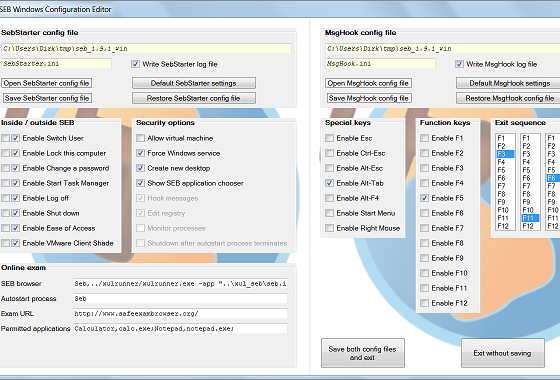
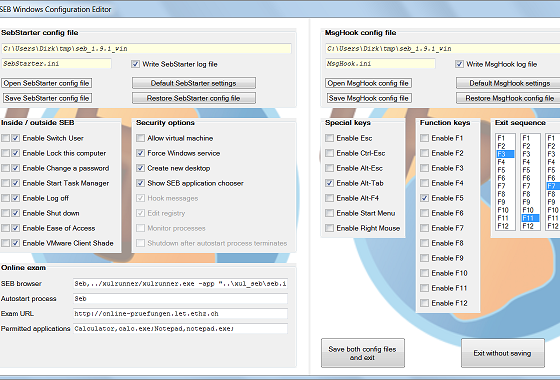

Benutzerhandbuch für Safe Exam Browser 2.0 und neuere Versionen
(momentan nur in Englisch verfügbar)
Es gibt zwei Konfigurationsdateien für SEB Windows: SebStarter.ini und MsgHook.ini. Diese befinden sich:
Um SEB für eine Online-Prüfung zu konfigurieren, kann der Dozent die beiden ini-Dateien mit einem beliebigen Texteditor wie z.B. Notepad bearbeiten. Viel einfacher ist es aber, auf den mit SEB mitgelieferten GUI-Editor SebWindowsConfig.exe doppelzuklicken. Im sich öffnenden Fenster SEB Windows Configuration Window werden die beiden mit SEB mitgelieferten Konfigurations-Dateien SebStarter.ini und MsgHook.ini dann automatisch geladen. Sie besitzen Voreinstellungen, die im GUI-Fenster angezeigt werden:

Der Dozent kann diese Einstellungen per Mausklicks und Tastatureingaben im GUI-Editor ändern und seine Einstellungen durch Klick auf Save ... config file wieder auf Festplatte speichern. Auch das Neuladen der Dateien ist mittels Open ... config file möglich, ebenso das Zurücksetzen auf die Voreinstellungen (Default ... settings) oder die zuletzt von Datei geladenen Werte (Restore ... config file):

Zum Schluss kann der Editor mit oder ohne Abspeichern der beiden Konfigurations-Dateien verlassen werden (Save both config files and exit bzw. Exit without saving).
SebStarter.ini ist die primäre Konfigurationsdatei. Untenstehend die Voreinstellungen der mit SEB Windows 1.9.1 mitgelieferten SebStarter.ini:
[SEB]
[SebStarterConfigFile]
WriteSebStarterLogFile=1
[InsideSeb]
InsideSebEnableSwitchUser=0
InsideSebEnableLockThisComputer=0
InsideSebEnableChangeAPassword=0
InsideSebEnableStartTaskManager=0
InsideSebEnableLogOff=0
InsideSebEnableShutDown=0
InsideSebEnableEaseOfAccess=0
InsideSebEnableVmWareClientShade=0
[OutsideSeb]
OutsideSebEnableSwitchUser=1
OutsideSebEnableLockThisComputer=1
OutsideSebEnableChangeAPassword=1
OutsideSebEnableStartTaskManager=1
OutsideSebEnableLogOff=1
OutsideSebEnableShutDown=1
OutsideSebEnableEaseOfAccess=1
OutsideSebEnableVmWareClientShade=1
[SecurityOptions]
AllowVirtualMachine=0
ForceWindowsService=1
CreateNewDesktop=1
ShowSebApplicationChooser=1
HookMessages=1
EditRegistry=1
MonitorProcesses=0
ShutdownAfterAutostartProcessTerminates=0
[OnlineExam]
SebBrowser=Seb,../xulrunner/xulrunner.exe -app "..\xul_seb\seb.ini" -profile "%LOCALAPPDATA%\ETH Zuerich\xul_seb\Profiles"
AutostartProcess=Seb
ExamUrl=http://www.safeexambrowser.org/
PermittedApplications=Calculator,calc.exe;Notepad,notepad.exe;
[OtherOptions]
Win9xKillExplorer=1
Win9xScreenSaverRunning=0
StrongKillProcessesBefore=
StrongKillProcessesAfter=
Wichtige Optionen der SebStarter.ini-Datei:
WriteLogFileSebStarterLog
Der SEB-Client kann Log-Dateien schreiben, welche hilfreich zur Analyse etwaiger Probleme beim Betrieb von SEB sind. Hierzu muss in der Datei SebStarter.ini bzw. MsgHook.ini jeweils die Option WriteLogFileSebStarterLog=1 bzw. WriteLogFileMsgHookLog=1 gesetzt werden.
Im Tool SebWindowsConfig.exe lauten diese Optionen Write logfile SebStarter.log und Write logfile MsgHook.log .
Beim Betrieb des SEB-Client werden dann die log-Dateien SebStarter.log und MsgHook.log in dasselbe Verzeichnis geschrieben wie ihre entsprechenden ini-Dateien.
AllowVirtualMachine
legt fest, ob der SEB-Client auf einer Virtuellen Maschine laufen darf (z.B. für Prüfungen in virtuellen Desktop-Umgebungen)
oder nicht (um mögliche Manipulationen zu verhindern).
ForceWindowsService
legt fest, ob der SEB-Client nur in Verbindung mit dem SEB-Windows-Service laufen soll. Der Zweck des SEB-Windows-Service wird im folgenden erklärt:
Einige Werte, die in der Windows-Registry-Datenbank gespeichert werden, beeinflussen das Systemverhalten von Windows und damit die Sicherheit von Online-Prüfungen. Seit Windows Vista werden diese Optionen im Windows-Sicherheits-Bildschirm mit dem blauen Desktop-Hintergrund angezeigt, der beim Drücken der Tastenkombination Ctrl_Alt_Del erscheint. (Bis Windows XP wurde beim Drücken von Ctrl_Alt_Del direkt der Task Manager aufgerufen).
In der Regel sollten für eine Online-Prüfung alle diese Optionen deaktiviert werden, um Manipulationen oder den Zugriff auf unerlaubte Hilfsmittel zu verhindern. Dies betrifft vor allem den Task Manager, da von diesem aus Programme beendet oder gestartet werden können, also auch unerlaubte Hilfsprogramme. Deshalb sind in der Voreinstellung alle Werte auf Enable...= 0 gesetzt (bzw. sind nicht angekreuzt).
Bis einschliesslich Windows XP war der Benutzer üblicherweise als Administrator eingeloggt, so dass der SEB-Client (SebStarter.exe) die Windows-Registry-Werte selber setzen konnte, da er die nötigen Rechte dazu hatte.
Seit Windows Vista sind die Benutzer (also auch die Prüflinge) aus Sicherheitsgründen dazu angehalten, sich nicht mehr als Administrator, sondern nur noch als Standardbenutzer in den Rechner einzuloggen. Wird der SEB-Client von einem Standardbenutzer gestartet, hat er jedoch nicht die notwendigen Rechte, um die Windows-Registry-Werte zu setzen.
Es ist deshalb ein im Hintergrund mit Administrator-Rechten laufender SEB-Windows-Service unabdingbar, der diese Aufgabe übernimmt. Dieser wird in einer .msi-Datei zusammen mit dem SEB-Client ausgeliefert, vom Microsoft Installer automatisch mit installiert und gestartet. Der SEB-Windows-Service funktioniert auch unter Windows XP.
Die Windows-Registry-Werte im einzelnen:
EnableSwitchUser
aktiviert die Schaltfläche "Benutzer wechseln" bzw. "Switch User".
EnableLockThisComputer
aktiviert die Schaltfläche "Computer sperren" bzw. "Lock this computer".
EnableChangeAPassword
aktiviert die Schaltfläche "Kennwort ändern..." bzw. "Change a password..."
EnableStartTaskManager
aktiviert die Schaltfläche "Task-Manager starten" bzw. "Start Task Manager".
Bemerkung:
Normalerweise macht es keinen Sinn, den Task Manager innerhalb von SEB (also während einer Online-Prüfung) zuzulassen. Ausserdem wird SEB gewöhnlich in einem neuen Desktop gestartet (siehe Option CreateNewDesktop weiter unten), was ein eventuelles Task-Manager-Fenster verdecken und unsichtbar machen würde. Falls man den Task Manager in SEB trotzdem zulassen möchte, so muss CreateNewDesktop deaktiviert sein. Eine alternative Möglichkeit besteht darin, den Task Manager als Drittapplikation TaskManager,taskmgr.exe; zu den PermittedApplications (siehe unten) hinzuzufügen.
EnableLogOff
aktiviert die Schaltfläche "Abmelden" bzw. "Log off".
EnableShutDown
aktiviert die Schaltfläche "Herunterfahren" bzw. "Shutdown" in der rechten unteren Ecke.
EnableEaseOfAccess
aktiviert die Schaltfläche "Erleichterter Zugriff" bzw. "Ease of Access" in der linken unteren Ecke, welche Hilfen z.B. für seh- oder hörgeschädigte Menschen bietet, wie z.B. die Bildschirmlupe.
EnableVmWareClientShade
aktiviert auf einem etwaigen virtuellen Desktop die "Shade"-Leiste am oberen Rand des Bildschirms.
Ab SEB Windows 1.8.3 werden diese Windows-Registry-Werte zweifach konfiguriert. Die Optionen InsideSeb... legen die Werte innerhalb von SEB fest (die also während einer Prüfung gültig sind, wenn SEB läuft). Die Optionen OutsideSeb... legen die Werte ausserhalb von SEB fest (die also im Normalbetrieb gültig sind, wenn SEB nicht läuft). Die Standardvorgaben sind, innerhalb von SEB alle Optionen auszuschalten und ausserhalb von SEB alle Optionen einzuschalten.
Der Grund für dieses Vorgehen:
Falls es Probleme beim Betrieb von SEB gibt und SEB vorzeitig verlassen wird oder aus irgendeinem Grund abstürzt, sind die Windows-Registry-Werte verstellt, z.B. der Task Manager auch im Normalbetrieb gesperrt, da für den Computer immer noch die InsideSeb-Werte gelten. Um die korrekten Werte wiederherzustellen, war es in diesem Fall notwendig, manuell als Administrator die Windows-Registry zu bearbeiten, was umständlich und fehleranfällig ist.
Ab SEB Windows 1.8.3 genügt es jedoch (sofern der SebWindowsService noch läuft), SEB noch einmal zu starten und mit der SEB-Austritts-Sequenz (z.B. F3_F11_F6, siehe unten) ordnungsgemäss wieder zu verlassen. Beim Verlassen werden dann die Registry-Werte wieder auf die OutsideSeb-Werte zurückgesetzt, und der Task Manager ist wieder verfügbar.
Weitere Optionen, die nichts mit den Windows-Registry-Werten zu tun haben:
CreateNewDesktop
legt fest, ob der SEB-Client in einem neu erzeugten Desktop-Fenster (im Vollbildmodus) ausgeführt werden soll, so dass u.a. die Taskleiste und das Startmenü am unteren Bildschirmrand ausgeblendet sind. (Bemerkung: Auch der Task Manager kann dann, selbst wenn er mit EnableStartTaskManager aktiviert wurde, in SEB nicht mehr benutzt werden, da er im Hintergrund unsichtbar ist).
ShowSebApplicationChooser
legt fest, ob nach dem Starten von SEB links oben ein Popup-Fenster für zugelassene Drittapplikationen erscheint, wenn man Alt_Tab drückt. Für Prüfungen mit Drittapplikationen muss dieser Wert auf 1 gesetzt werden, für Prüfungen ohne Drittapplikationen kann man auf dieses Popup-Fenster verzichten und den Wert auf 0 setzen.
PermittedApplications
legt die zugelassenen Drittapplikationen fest.
SEB kann zusammen mit anderen Anwendungen laufen, beispielsweise dem Taschenrechner (Calculator) oder dem Notizbuch (Notepad), welche beide standardmässig voreingestellt sind.
In diesem Fall muss das Popup-Fenster für die Auswahl von Drittapplikationen aktiviert werden (ShowSebApplicationChooser auf 1 setzen) und diese Drittapplikationen müssen zu PermittedApplications hinzugefügt werden. Sie müssen das folgende Format haben:
[application1,
Pfad-zur-application1/application1-name;application2,Pfad-zur-application2/application2-name;application3,
Pfad-zur-application3/application3-name].
Die Applikationen werden mit Strichpunkten voneinander abgetrennt. Alternativ dazu kann man die Pfade auch in der Skript-Datei SebStarter.bat eintragen. Das Format sieht dann so aus:
...
set PermittedAppDir1="%ProgramFiles%\VMware\VMware View\Client\bin
set PermittedAppDir1(x86)="%ProgramFiles(x86)%\VMware\VMware View\Client\bin"
...
path %path%;%PermittedAppDir1%
path %path%;%PermittedAppDir1(x86)%
...
SebStarter.exe
...
In diesem Fall muss SEB durch Doppelklick auf SebStarter.bat statt SebStarter.exe gestartet werden. Das Skript erweitert die Umgebungsvariable PATH um die Pfade zu den Drittapplikationen und ruft dann SEB auf.
AutostartProcess
legt einen automatisch startenden Prozess fest. In der Regel ist dies der SEB-Client (AutostartProcess=Seb) zusammen mit einer Browser-Komponente. Momentan ist es der XULRunner, der in die Zeile SebBrowser=... eingetragen ist.
Spezielles Szenario:
Möchte man den SEB nur als reine Kiosk-Applikation ohne Browser verwenden, um z.B. eine lokale Prüfungs-Anwendung ohne Learning-Management-System abzusichern, so muss man AutostartProcess= (ohne das Wort Seb) setzen.
MonitorProcesses
Wenn aktiviert, werden alle laufenden Applikationen bzw. Prozesse überwacht. Falls versucht wird, eine nicht erlaubte Anwendung zu starten (kein Eintrag in PermittedApplications), wird diese Anwendung gestoppt. Hinweis: bisweilen bereitet diese Option Probleme; darum sollte sie im Zweifelsfalle deaktiviert werden (MonitorProcesses=0 setzen).
HookMessages
Wenn aktiviert, fängt SEB Tastenkombinationen wie Alt_F4
oder den rechten Mausklick ab. In der anderen Konfigurationsdatei MsgHook.ini kann im Detail eingestellt werden, welche Tastenkombinationen erlaubt sind und welche nicht. Untenstehend die Voreinstellungen der mit SEB Windows 1.9.1 mitgelieferten MsgHook.ini::
[SEB]
[MsgHookConfigFile]
WriteMsgHookLogFile=1
[SpecialKeys]
EnableEsc=0
EnableCtrlEsc=0
EnableAltEsc=0
EnableAltTab=1
EnableAltF4=0
EnableStartMenu=0
EnableRightMouse=0
[FunctionKeys]
EnableF1=0
EnableF2=0
EnableF3=0
EnableF4=0
EnableF5=1
EnableF6=0
EnableF7=0
EnableF8=0
EnableF9=0
EnableF10=0
EnableF11=0
EnableF12=0
[ExitSequence]
B1=114
B2=122
B3=117
Im obigen Beispiel sind die meisten Tastenkombinationen deaktiviert (Enable...=0 bedeutet "Aktivieren = Nein"). Das bedeutet, mit dieser Konfiguration sind nur wenige Tastenkombinationen erlaubt.
Eine Ausnahme ist die SEB-Austritts-Sequenz, mit der SEB jederzeit verlassen werden kann. Es handelt sich um eine Kombination von drei Funktionstasten, die in einer bestimmten Reihenfolge gedrückt und dann gleichzeitig gehalten werden müssen (ähnlich wie Strg_Alt_Entf bzw. Ctrl_Alt_Del zum Aufrufen des Windows-Sicherheits-Bildschirms bzw. des Task Managers). Voreinstellung ist die Tastenkombination F3_F11_F6. Dies bedeutet, die Funktionstasten F3, F11, F6 müssen in genau dieser Reihenfolge gedrückt und einen Augenblick gehalten werden.
Die Sequenz zum Beenden von SEB kann in MsgHook.ini mittels der Variablen B1, B2 und B3 angepasst werden. Die Funktionstasten F1, F2, ..., F12 sind als Dezimalwerte (virtuelle Tastencodes) codiert, entsprechend der untenstehenden Tabelle:
| F-Taste | Code |
|---|---|
| F1 | 112 |
| F2 | 113 |
| F3 | 114 |
| F4 | 115 |
| F5 | 116 |
| F6 | 117 |
| F7 | 118 |
| F8 | 119 |
| F9 | 120 |
| F10 | 121 |
| F11 | 122 |
| F12 | 123 |
Wenn wir nun die Variable B1 auf 115 setzen:
ändert sich die erste Funktionstaste, die gedrückt werden muss, von F3 auf F4. Dies weil wir die erste Variable B1 geändert haben und 115 der Dezimalwert des virtuellen Tastencodes für F4 ist. Weil wir B2 und B3 nicht geändert haben, bleiben die zweite und dritte Funktionstaste gleich; die Sequenz zum Verlassen von SEB ändert sich also vom Standard F3_F11_F6 zur benutzerdefinierten Sequenz F4_F11_F6.
Mit B2 und B3 kann man natürlich auch die anderen beiden Funktionstasten ändern, beispielsweise:
B1=115
B2=116
B3=117
ändert die Sequenz zum Verlassen von SEB auf F4_F5_F6.
Wichtig: Falls Sie eine SEB-Austritts-Sequenz ausprobieren und das Verlassen des SEB trotzdem nicht funktioniert, hilft es eventuell, eine andere Sequenz auszuprobieren. Zum Beispiel ist die Sequenz F1_F2_F3 erfahrungsgemäss ungeeignet. Möglicherweise ist die Taste F1 sogar völlig zu meiden, da sie von vielen Programmen für die Hilfe-Funktion reserviert ist und auch für die Windows-Hilfe zuständig ist. Höhere Funktionstasten scheinen weniger problematisch zu sein.
Falls Sie aus dem SEB nicht mehr herauskommen und nach Drücken von Ctrl_Alt_Del auch der Task Manager gesperrt ist, hilft nach momentanem Entwicklungsstand leider nur ein Neustart des Rechners. Nach dem Neustart können Sie die im Programmdaten-Verzeichnis liegende Datei MsgHook.ini kopieren, darin eine andere Tastenkombination einstellen, diese geänderte MsgHook.ini in das Programmdaten-Verzeichnis zurückkopieren und damit die alte MsgHook.ini überschreiben bzw. ersetzen. Sodann können Sie SEB noch einmal starten und die neue SEB-Austritts-Sequenz testen.
Bemerkungen:
1.)
Wenn Drittapplikationen von SEB erlaubt werden sollen, muss auch die Tastenkombination Alt_Tab zugelassen werden:
EnableAltTab=1
in MsgHook.ini, ausserdem
in SebStarter.ini.
In SEB muss man dann Alt_Tab drücken, was das Popup-Fenster Zugelassene Anwendungen aufstartet, mit welchem man die gewünschte Drittapplikation auswählen kann.
2.) Wenn das Startmenü in SEB zugelassen werden soll, muss CreateNewDesktop deaktiviert sein, denn ein neuer Desktop würde das Startmenü überdecken und damit unsichtbar machen. Man muss in diesem Fall also
EnabeStartMenu=1
in MsgHook.ini und
CreateNewDesktop=0
in SebStarter.ini setzen.
In SEB mit XULRunner (Version 1.4 und neuer) können Probleme mit SSL-Zertifikaten auftreten:
Bevor Sie SEB starten, sollten Sie die Startseite Ihrer Online-Prüfung festlegen, und welche Tastenkombinationen während der Online-Prüfung durch SEB unterdrückt werden sollen. Diese wurden oben im Abschnitt Konfigurationsdateien beschrieben. Für's erste können Sie auch die Standard-Vorgabewerte benutzen, die im heruntergeladenen SEB schon vorhanden sind.
Die Start-URL von SEB ändert man, indem man in der Datei SebStarter.ini den Wert ExamUrl auf die entsprechende Web-Adresse setzt, z.B.
ExamUrl=http://www.safeexambrowser.org/
In aktuellen Versionen von ILIAS und Moodle werden keine Erweiterungen mehr benötigt, um Safe Exam Browser zu verwenden. Die Verbindungsmöglichkeit mit SEB ist bereits in diesen LMS eingebaut. Falls eine ältere ILIAS-Version benutzt wird, finden sich Informationen, wie das Skin "Naviless" in ILIAS installiert wird, im ILIAS Information Center. Und für ältere Moodle-Versionen finden sich Informationen zur Installation der Erweiterung in der Readme-Datei, die an die Download-Datei angehängt ist.